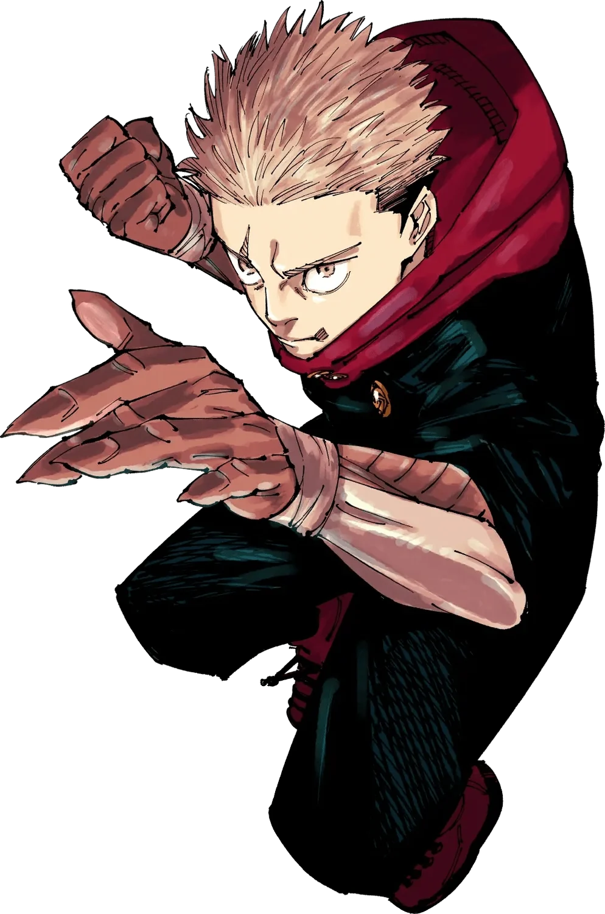
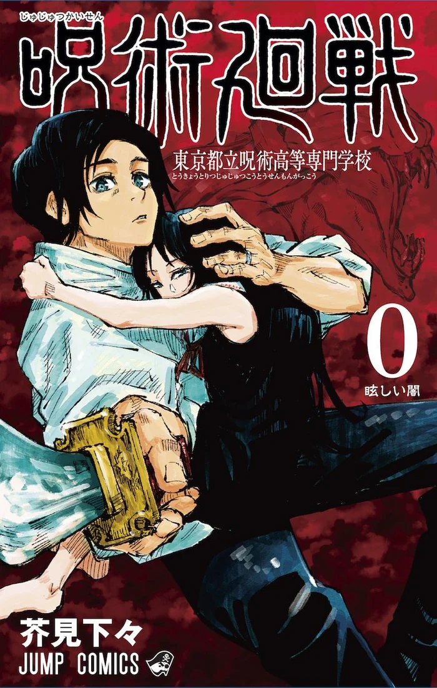

Feitiçaria e maldições
Toda emoção negativa gera energia amaldiçoada. Quando ela se acumula, nascem as maldições, e só os feiticeiros jujutsu conseguem exorcizar essas criaturas.

O universo
Um mundo onde o medo ganha forma
Criado por Gege Akutami, Jujutsu Kaisen acompanha Yuji Itadori, um estudante que vira receptáculo de Ryomen Sukuna, o Rei das Maldições.
Para escapar da execução, ele entra na Escola Técnica de Jujutsu de Tóquio e passa a caçar os dedos amaldiçoados de Sukuna, enquanto descobre o quanto o mundo dos feiticeiros pode ser cruel.
- Estreia do mangá
- 2018
- Weekly Shōnen Jump
- Capítulos
- 271
- Mangá concluído em 2024
- Volumes
- 30
- Edições encadernadas
- Estreia do anime
- 2020
- Animação do estúdio MAPPA
A história
Arcos do anime
Do filme que apresentou Yuta Okkotsu até o Jogo do Abate. Cada arco aparece com a capa de um volume do mangá que ele adapta.

Personagens
Feiticeiros e maldições
Estudantes, professores e as ameaças que movem a história. Clique em um personagem para ver a ficha completa.
Nenhum personagem encontrado.